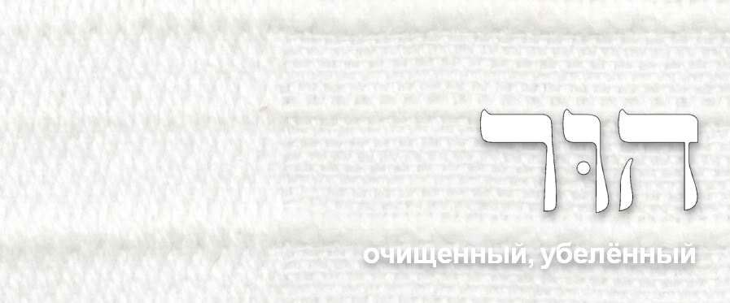
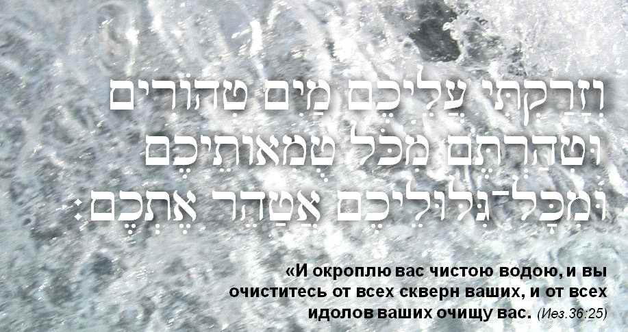
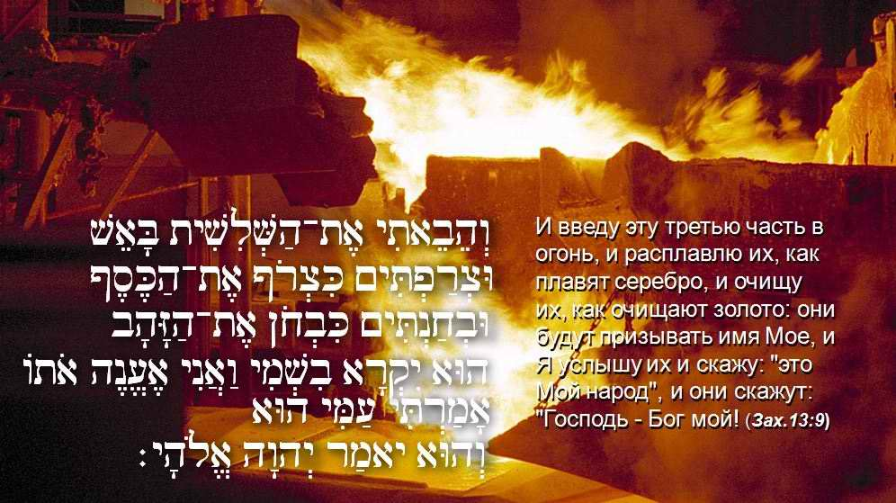
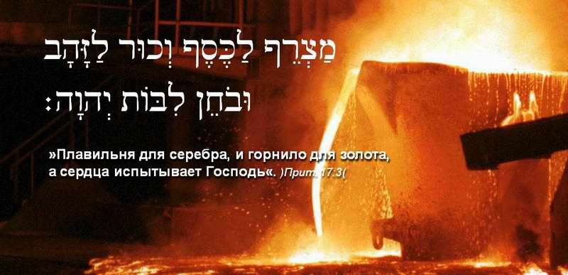
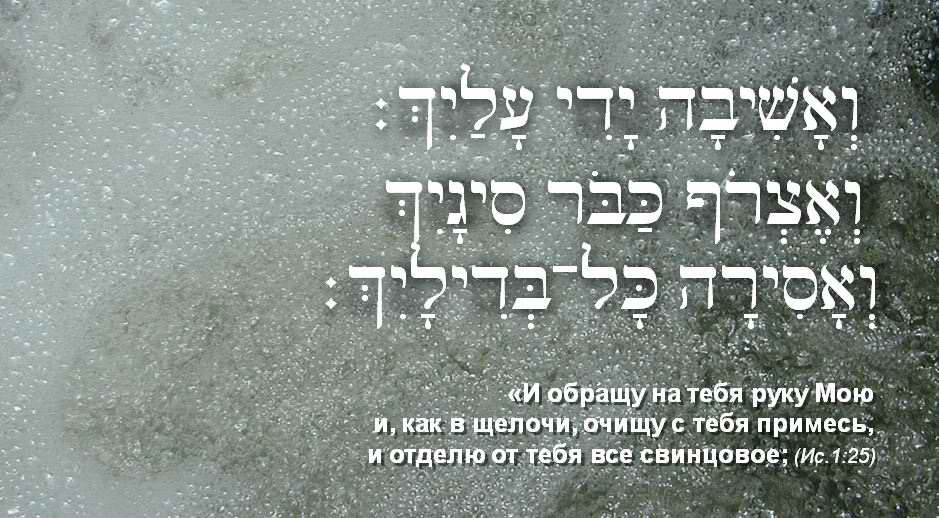

Bezalel. Grandfather Hur
"See, I have called by name Bezalel the son of Uri, the son of Hur, of the tribe of Yehudah…"
רְאֵה קָרָאתִי בְשֵׁם בְּצַלְאֵל בֶּן־אוּרִי בֶן־חוּר לְמַטֵּה יְהוּדָה׃
Exod. 31:2 RE'E KARATI BE-SHEM BETSALEL, BEN URI, BEN HUR, MI-MATE YEHUDA
HUR, the grandfather of Bezalel, was the founder of a dynasty of craftsmen. His destiny raised him swiftly in his old age: he became Moshe's companion at the age of about a hundred. The midrash says that the old man was related to Moshe: Miriam, the sister of the leader of the Israelites, was Hur's wife. But honours were not his lot. He was born to undergo a trial.
BEZALEL, SON OF LIGHT. The Calling (part I)
BEZALEL, SON OF LIGHT. Under the Shelter of the Most High (part II)
BEZALEL, SON OF LIGHT. The Light of the LORD (part III)
BEZALEL, SON OF LIGHT. Grandfather HUR (part IV)
BEZALEL, SON OF LIGHT. One Who Glorifies God (part V)
In the Russian Bible the name Hur sounds different: Or. This confuses those who know even a little Hebrew, since Or means light. And we have already said that Light is the name of Bezalel's father, not his grandfather.
So in Hebrew the name of the artist's grandfather is properly Hur. It is a rather rare name with an interesting meaning. Hur means snow-white, cleansed (of finished cloth). And this whiteness is not original; it is achieved as the result of a hard, laborious process. This way of whitening cloth is still practised in textile production today, so in this respect nothing has changed. In general, this way of cleansing cloth in lye, and the cleansing of metals by smelting, have the same aim: to remove the dross, every impurity. The purer the metal (silver, gold and so on), the higher its value.
חור HUR (Heb.): pure
Bezalel, son of Light, of the first light, which has the purity and holiness of the Creator.
What, then, does holiness mean? It is complete belonging, and therefore the absence of any admixture, absolute separation from what is unclean. This is what the name of Bezalel's grandfather, Hur, tells us.
Hur in Hebrew means pure, cleansed, white. As it is written: "Bezalel, son of Uri, son of Hur". Scripture speaks a great deal about the great value of what is pure. Since ancient times people have valued it: pure gold, silver, bleached snow-white cloth. Refining metal, smelting and bleaching cloth are long and laborious processes, and that is why their price is so high. But God values a pure heart above all that is pure, and so He insists on the whitening of the garments of a person's soul and heart. As it is written in the book of Proverbs: "The refining pot is for silver, and the furnace for gold: but the LORD trieth the hearts" (Prov. 17:3). Purity is an essential condition for standing before the Most High. As Moshe was told at Mount Sinai: "Go unto the people, and sanctify them today and tomorrow, and let them wash their clothes" (Exod. 19:10). We hear the same demand in the command of the Most High to the artist, contained in the name of Bezalel, son of Hur, son of purity and holiness.

In Scripture the word "hur" (cleansed, white) names a special kind of cloth obtained by special dressing and treatment. The process of cleansing and bleaching this cloth, which gave it its dazzling white colour, consisted of treating the cloth in lye, then rinsing it in clean water, and again in lye, and again in water. And again in lye, and again in water, until the required and so valuable quality was reached: absolutely white, perfectly pure cloth. But a person cannot cleanse himself. He can only agree to let God do it for him.

As it is written: "Then will I sprinkle clean water upon you, and ye shall be clean: from all your filthiness, and from all your idols, will I cleanse you" (Ezek. 36:25). "And I will bring the third part through the fire, and will refine them as silver is refined, and will try them as gold is tried: they shall call on My name, and I will hear them: I will say, It is My people: and they shall say, The LORD is my God" (Zech. 13:9).


God uses this image, the dramatic picture of refining, more than once to show the essence of what He wants to do in our hearts. As it is written: "And I will turn My hand upon thee, and purely purge away thy dross, and take away all thy tin" (Isa. 1:25).

The art of Israel must by definition carry the purity and holiness of the Creator, that is, belong to Him completely. Of course, this is possible only when the artist himself is holy, that is, has no admixture in his heart. Only then can he be called a son of Hur, the one who is cleansed, whitened, free of admixture, brought to perfection like silver refined seven times.
BEZALEL, SON OF LIGHT. The Calling (part I)
BEZALEL, SON OF LIGHT. Under the Shelter of the Most High (part II)
BEZALEL, SON OF LIGHT. The Light of the LORD (part III)
BEZALEL, SON OF LIGHT. Grandfather HUR (part IV)
BEZALEL, SON OF LIGHT. One Who Glorifies God (part V)
The destiny of Hur, Bezalel's grandfather, is interesting and dramatic. On this, see the midrash "Called to Be Refined" (video in Russian).
This article has been revised and expanded by the author. (Ephraim Kalish's article was first published on the site skiniyadavidova.org.)
Author: Ephraim Kalish / Torah-Art
 His Hands Were Faith (Exod. 17:12)
His Hands Were Faith (Exod. 17:12)